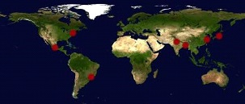

Eagles Arise International Ministries
Prayer • Revival • Evangelism • Discipleship
We began this ministry by praying for evangelism and revival in one of the seven target metropolitan areas each day. Three out of every four people now live in a city, and these mega-cities represent vast populations in need of Jesus Christ.

Feel free to join us and incorporate intercession for the salvation of the people in these cities into your daily prayers. Pray for the Word of God to go forth and for the Holy Spirit to move on individual lives to bring about a great harvest.
We also carry Jerusalem in our hearts in keeping with Acts 1:8, as part of a broader Biblical vision extending from Jerusalem to the ends of the earth.
| Day | City |
|---|---|
| Monday | Tokyo, Japan |
| Tuesday | Shanghai, China |
| Wednesday | Dhaka, Bangladesh |
| Thursday | Delhi, India |
| Friday | Sao Paulo, Brazil |
| Saturday | Mexico City, Mexico |
| Sunday | New York-Newark, United States |
There are millions of people in these seven mega-cities who need the Gospel. Pray for revival, repentance, bold Christian witness, and open hearts to Jesus Christ.

Ask the Lord to raise up laborers, strengthen churches, and open doors for the Gospel in every city.

Pray for believers to remain strong, joyful, and faithful in places of pressure, opposition, or spiritual need.